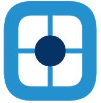

<ion-app>
  <ion-split-pane>
    <ion-menu>
      <ion-header>
        <ion-toolbar color="primary">
          <ion-avatar item-start class="m-3">
            
          </ion-avatar>
          <p class="mb-0 text-white">Judith Quezada (Pruebas)</p>
          <small class="text-white">Celular de J5</small>
        </ion-toolbar>
      </ion-header>
      <ion-content>
        <ion-list>
          <ion-menu-toggle auto-hide="false" *ngFor="let p of appPages">
            <ion-item [routerDirection]="'root'" [routerLink]="[p.url]">
              <ion-icon slot="start" [name]="p.icon"></ion-icon>
              <ion-label>
                {{ p.title }}
              </ion-label>
            </ion-item>
          </ion-menu-toggle>
          <div>
            <small color="medium" style="display: -webkit-box" class="m-3"
              >Otras opciones</small
            >
          </div>
          <ion-menu-toggle auto-hide="false" *ngFor="let p of opcionesPage">
            <ion-item [routerDirection]="'root'" [routerLink]="[p.url]">
              <ion-icon slot="start" [name]="p.icon"></ion-icon>
              <ion-label>
                {{ p.title }}
              </ion-label>
            </ion-item>
          </ion-menu-toggle>
        </ion-list>
      </ion-content>
    </ion-menu>
    <ion-router-outlet main></ion-router-outlet>
  </ion-split-pane>
</ion-app>
